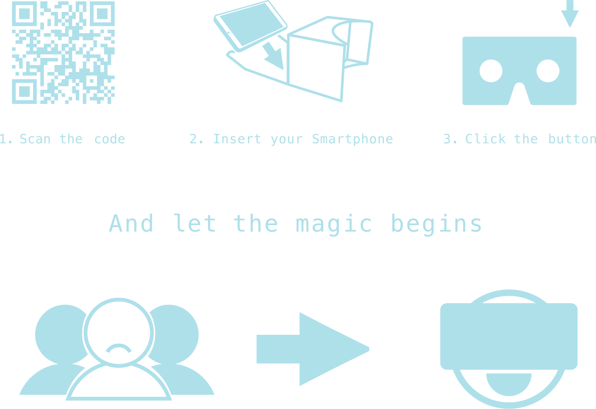

La rete è un posto divertente. Spesso vorremmo non essere tediati dal mondo circostante. Purtroppo i nostri dispositivi non sono ancora abbastanza avanzati da isolarci completamente dal mondo e input visivi e o uditivi ci distraggono dal nostro divertimento, quando in realtà vorremmo solitudine. My Tunnel of lol/neliness cerca di risolvere questo dilemma e consentire una giusta fruizione del divertimento in rete. Il progetto nasce come web app di realtà virtuale, indossando il visore entrerai in un tunnel 3d, proiettandosi in un viaggio attraverso delle immagini automaticamente richiamate da tumblr.com.
Ma perché limitarsi alla realtà virtuale? Goditela da qualsiasi dispositivo! E ricorda, per i risultati migliori ci vuole un po' di pazzia